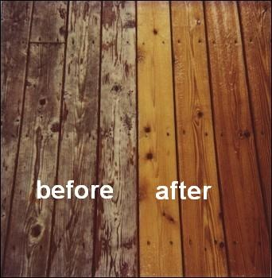
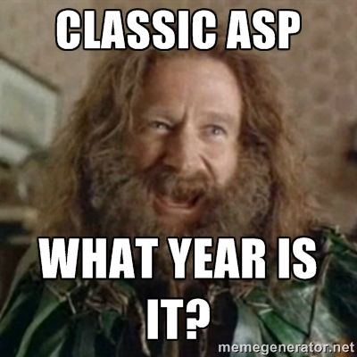
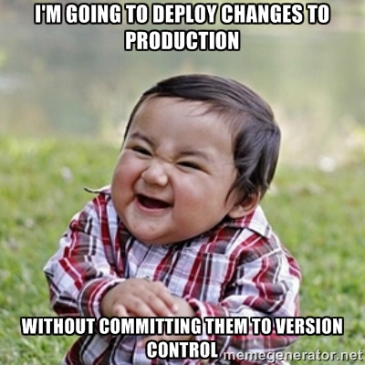
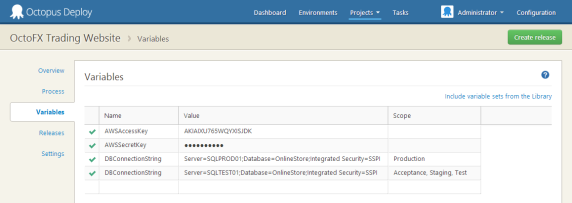

Legacy System POWERWASH
Created by Giscard Biamby / @giscardbiamby
Target Audience:
You have an existing .NET or Classic ASP app (or PHP or Node), and want to:
- Implement Continuous Delivery/Deployment
- Migrate 100% to Azure.
- Migrate partially to Azure
- A combo of above
Our journey from rock bottom to development bliss
Act 1: Exposition
- Team of 3
- A fairly large Classic ASP Application
- ... with custom and 3rd party COM components
- Windows Server 2000, SQL Server, custom datacenter
How we work
- Subversion
- DEV/QA/LIVE environments
- Dev's don't have local
- Migration process:
- Dev's manually copy to DEV/QA.
- Custom tool to copy to PROD.
- Trust devs to commit to SVN before migrating.
- 100% manual QA
- Migrate to PROD 5-10x a day
Typical/basic setup
Web Farm + SQL cluster, behind a load balancer, and some jobs servers.
Act II: Complication
Old servers, old tech stack
Golden Servers
- One-time configuration edits during outages
- "Temporary" config changes that stay forever
- Undocumented settings, tools, services
“The system becomes a house of cards. You fear any change and you fear replacing it since you don’t know everything about how it works.”- Chad Fowler
Out of sync Environments
If your process allows people to bypass version control...
Shared development environment
- Slow and laggy VPN + old, slow servers
- Painfully slow edit-save-refresh loop
SVN
Branching and merging are such as hassle we never use them.
100% Manual Testing
(More like 99.99% NO testing)
Act III - Turning Point
Gradual Introduction of newer tools / technologies
Allow developers to run local copy of site!
Created a Powershell script to set up the site in IIS, install deps.
Speed up edit/save/refresh cycle => Efficiency.
(we'll re-use this script later, when we move to Azure)
BTW, Powershell is Awesome
Migrate from Subversion to Git
Why: Cheap & fast branching/merging that work, flexible workflows.
Peer pressure: You alienate yourself from developer community by not using Git.
“- Joel Spoelsky on MercurialGitWhen you switch to MercurialGit, you may not even realize it, but branching becomes possible again, and you don’t have to be afraid.
That means you can have team repositories, where a small team of programmers collaborates on a new feature, and when they’re done, they merge it into the main development repository, and it works!!
”
svn2git
- Could have used "git svn", but read some bad things about it (http://tinyurl.com/gitsvnbad).
- Lots of other ways to convert SVN->Git, use whatever works for you.
svn2git Installation on new ubuntu precise32 VM
sudo apt-get install subversion
sudo apt-get git
sudo apt-get install git-core git-svn
sudo apt-get install ruby rubygems
sudo gem install svn2git
Get a list of the svn commit authors, to pass into svn2git
svn log -q | awk -F '|' '/^r/ {sub("^ ", "", $2); sub(" $", "", $2) ; print $2" = "$2" <"$2">"}' | sort -u > authors-transform.txt
Repository Conversion
mkdir yourproj
cd yourproj
svn2git http://your.svn.repo.com/YourProj --nobranches --notags --username YOURUSERNAME --verbose
git filter-branch --commit-filter 'git_commit_non_empty_tree "$@"' HEAD
git remote add origin git@bitbucket.org:you/YourProj.git
git push -u origin --all
Used both Git and SVN during 4-6 week transition period
- Not everyone on the team knew Git.
- We decided everyone would read ch. 1-4 of "Pro Git" before switching.
- Agreed on one chapter a week.
- New code still went to SVN, used svn2git to sync those changes to the new Git repo.
Sync new commits from SVN to Git
cd YourProj
svn2git --rebase
SVN->Git: Flipping the Switch
When we were ready, we did a final svn->git sync, and everyone started committing to Git. That's all.
Have re-used this process for dozens of projects since.
Azure Hosting Options
- Azure Websites (PaaS)
- Cloud Services (PaaS)
- Azure Virtual Machines (IaaS)
Our Needs
| Azr. Websites | Cloud Svc | Azr. VM's | |
|---|---|---|---|
| Classic ASP | Yes | Yes | Yes |
| Custom Dep's | NO | Yes | Yes |
| VPN | NO | Yes | Yes |
Winner: Cloud Services
- Easier to automate, scale, and manage than VM's.
- Note: Storage on Cloud Services is ephemeral; you aren't guaranteed to ever have a particular instance be alive for any period of time (so you need at least 2 instances, and don't write anything critical to disk).
- Go with VM's if you need persistent instances, e.g., if you have to write to disk a lot
Migrating Classic ASP to Azure
Pretty easy, actually:
- New VS.NET solution
- Add Cloud Service project (web role)
- Add existing website (Can be Classic ASP, ASP.NET, etc)
- Configure web role via .csdef
- ... (cont.)
Configure startup script in .csdef:
<Startup>
<Task commandLine="Startup/Startup.cmd" executionContext="elevated" taskType="simple" />
</Startup>
Go ahead and make your startup script a powershell script
REM This script executes from: ...WindowsAzure1csxDebugrolesInqWebapprootbin
REM Some debug output -- output environment vars:
PowerShell -Version 3.0 -NoProfile -ExecutionPolicy Unrestricted "gci env: | format-list" >> "%TEMP%StartupLog-EnvironmentVars.txt" 2>&1
REM Run PowerShell startup script:
IF "%ComputeEmulatorRunning%" == "false" (
PowerShell -Version 3.0 -noprofile -ExecutionPolicy Unrestricted .Startupstartup.ps1 -ComputeEmulatorRunning "false" -Environment %Environment% -roleRoot %RoleRoot% >> "%TEMP%StartupLog.txt" 2>&1
) ELSE (
PowerShell -Version 3.0 -noprofile -ExecutionPolicy Unrestricted .Startupstartup.ps1 -ComputeEmulatorRunning "true" -Environment %Environment% -roleRoot %RoleRoot% >> "%TEMP%StartupLog.txt" 2>&1
)
REM If an error occurred, return the errorlevel:
EXIT /B %errorlevel%
Cloud Service Startup Script
- Here is where you perform all customizations:
- configure IIS, enable Classic ASP, install 3rd party dependencies, install Windows features, etc.
Cloud Service Startup Script: Idempotency
- Make every step idempotent!
- Startup script runs on instance provision, deploy, & reboot
- Use file system to record each step, so you don't have to re-run Startup.bat if the VM is simply restarting.
- Use simple functions to abstract idempotency bookkeeping (demo)
Handling Environment Configurations
- Can be tricky, but possible.
- VIP swaps aren't good for environments
- VIP slots are within a single env., the slots aren't meant to point to different env's
- VIP swap slots also cost $ while in use
Our Environment Config Strategy
- Single build deployed to all environments
- One ServiceConfiguration.*.cscfg per environment
- .cscfg has
<ConfigurationSettings>section, put your config's there - You have to do a little legwork at each of the following files to pipe the settings all the way thru:
- .cscfg -> .csdef -> startup.bat -> startup.ps1 (demo)
- You can also do Startup.cs (C#)
We didn't want to move our DB to the cloud
So we needed VPN to connect Cloud Services to our datacenter
Azure Site-to-Site VPN
- Easy setup, just follow docs, can do all of it through the UI, Powershell, or API
- Azure dictates the pre-shared key
- Check the docs for list of supported devices
Azure Regions & Datacenters
- Region is a datacenter
- Datacenter has clusters, which have containers....
{ Datacenter: Containers: [ { ContainerNo:1, Clusters:[{}, {},...] }, { ContainerNo:2, Clusters:[{}, {},...] }, ... ] }
Affinity Groups
- A logical grouping of compute/storage resources
- Services in same group will be provisioned in same Cluster
- Basically, lets you co-locate services/instances within Datacenter for lower latency / faster access between the services.
VPN, VNet, and Regions
- Services can be assigned a VNet; they inherit the VNet's region
- VNet gets a gateway for VPN tunnel
- You can change VNet's DNS servers on the fly (instance reboots required)
S2S VPN: DNS
- Use Azure DNS (it only knows about Azure stuff)
- Or use your own (either hosted on Azure VM, or from your on-premises)
Continuous Delivery
- Automation of all steps in the build and deploy pipeline, but final deploy to PROD requires manual intervention.
Continuous Deployment?
- ALL steps automated, including deploy to PROD.
- You better have rigorous automated tests!
Pick the one that works for your project/team.
Build Pipeline
commit -> build -> test -> deploy (demo: Octopus diagram)
Automated Build
Angle brackets build systems: NAnt, MSBuild, etc, work, but are pretty awful.Try a scripting language instead
PSake - DSL on top of PowerShell
Other Options: Rake, or Albacore (both Ruby)
Automated Tests
Automated Tests
- You need them!
- Tons of options for .NET: NUnit, MSTest, xUnit, mspect, etc.
- All of them are supported in TeamCity
Setting up Build Pipeline with TeamCity
- Set up build step
- Point version control to Git
- Set up PowerShell task
- Use snapshot dependencies to chain steps together
- Chained steps use artifacts generated by earlier steps
- Use OctopusDeploy TeamCity plug-in to deploy to Azure
Octopus Deploy
- Just handles Deployment
- Supports Azure, Windows Services, IIS, Console Apps, etc.
Octopus injects configuration into .config/.cscfg files
This is where we manage environment configs
Build Server setup
- 1 Primary: Hosts TeamCity and Octopus Servers
- 1 Dedicated Build Agent
- Octopus Tentacle installed on 2 Jobs servers
- All the above are Azure VM's
- Data transfers between VM"'s are FAST, and free
Act IV - Challenges
Build Times were absurd in the beginning
- Timeouts
- Due to :
- Large file count (many small files; ~23,000 total)
- Large total file size (~1.4GB working dir)
- Instance size for TeamCity build agent was too small (initially XS), IOPS and network bandwidth limited
Big effort to reduce file count and total size
- Lots of powershell & SQL
- Moved all images & PDF's to blob storage
Build times reduced to ~01m:45s

Deploy pkg size: 300MB -> 50MB

Static files as a separate build pipeline
Created AzzySync, cmdline app to sync local folders to Azure blob storage
1-2 minutes to publish files, 2.8x faster download
Results
- Faster feedback loop for developers.
- Deploy up to 4x / hour.
- Saved ~1.2 man hours / day
- Fewer errors in production
- Git as single source of truth for code and infrastructure. Everything is downstream from Git. No configuration drift.
- Improved server response times & page load speeds.
- Easily scale out.
- Migration path to ASP.NET